Ogni schermata, ogni passaggio, ogni comando.
Questa guida mostra l'applicazione reale, così com'è: le figure sono state catturate dalla versione 2.58.0 in esecuzione. Ogni finestra è spiegata campo per campo, con procedure numerate per la conversione, l'anteprima, il Wi-Fi FTP, la galleria cliente e il tethering.
Franchetti Raw Converter Pro trasforma RAW e immagini in file pronti per web, clienti e stampa. Lavora su una copia sviluppata in memoria e scrive soltanto nella cartella di destinazione: i file originali restano intatti.
| Requisito | Dettaglio |
|---|---|
| Sistema | Windows 10 o Windows 11, 64 bit. |
| Memoria | 8 GB consigliati; 16 GB o più per batch grandi e RAW da 40–60 MP. Il programma riduce i processi se la RAM libera scende. |
| Spazio disco | Almeno 1 GB libero per il programma e lo spazio necessario per i file convertiti. |
| Formati in ingresso | RAW: .arw .cr2 .cr3 .nef .nrw .raf .dng .orf .rw2 .pef .srw .x3f .3fr .fff .raw .rwl .dcr .k25 .kdc .mos .mrw .erf .mef .iiq .cap .braw .gpr. Immagini: .jpg .jpeg .png .tif .tiff .bmp .webp. |
| Formati in uscita | JPEG, PNG, TIFF e WebP. |
| Internet | Non necessario per convertire, ricevere via FTP o usare la galleria in locale. Serve solo per l'invio a Telegram/Dropbox. |
Franchetti_Raw_Converter_Setup_v2.58.0.exe e segui la procedura. In alternativa usa la versione portabile FranchettiRawConverterPro.exe.| Scheda | Cosa contiene | Quando usarla |
|---|---|---|
| Batch | Sorgente, destinazione, dimensioni, formato, anteprima PRIMA/DOPO, correzioni rapide, pulsante AVANZATE, analisi, avvio e avanzamento. | Conversione di una o centinaia di foto. È la schermata principale. |
| Wi-Fi FTP | Server FTP integrato, dati per la fotocamera, copyright, galleria cliente, cartelle di sessione. | Scatto in studio o evento con invio diretto delle anteprime al PC. |
| Tethering & Cloud | Sony Wi-Fi diretto, hot-folder per le altre marche, credenziali Telegram e Dropbox. | Fotocamera collegata e invio automatico dei risultati. |
| Log | Registro in tempo reale di file, errori, processi, FTP e cloud. | Controllo, assistenza e salvataggio del registro. |
| Elemento | Significato |
|---|---|
| Passo numerato | Una procedura da seguire nell'ordine indicato. Il numero blu è il passo. |
| Tabella Struttura | Elenca ogni zona o comando della schermata: a cosa serve e come si usa. |
| Nota blu | Un chiarimento o un consiglio che non cambia il risultato. |
| Attenzione ambra | Un'impostazione che può peggiorare la resa se usata male. |
| Limite rosso | Un confine reale del programma: meglio conoscerlo prima. |
| Regola verde | La buona pratica consigliata nella maggior parte dei casi. |
Ogni conversione segue lo stesso percorso, che vale per un singolo file o per un batch di centinaia. Conoscerlo aiuta a capire dove intervenire quando qualcosa non torna.
Solo i file prodotti, con il nome e il formato scelti. Non ci sono copie nascoste dei RAW, non ci sono file temporanei e non viene toccata la cartella di partenza. Se la destinazione è dentro la sorgente, il programma la esclude dalla lettura per non rielaborare i propri output.
All'avvio si apre la scheda Batch. La finestra si adatta all'area di lavoro di Windows e mantiene tutte le impostazioni visibili su due colonne, anche a 1366×768.
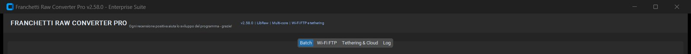
| Elemento | Cosa mostra | A cosa serve |
|---|---|---|
| Barra del titolo | Franchetti Raw Converter Pro v2.58.0 - Enterprise Suite, con i pulsanti Riduci a icona, Ingrandisci, Chiudi. | Identifica versione e finestra. Chiudere la finestra interrompe il batch in corso e ferma il server FTP: salva prima il lavoro. |
| Nome programma | FRANCHETTI RAW CONVERTER PRO. | Riferimento visivo; resta fisso in tutte le schede. |
| Messaggio centrale | Ogni recensione positiva aiuta lo sviluppo del programma - grazie! | Messaggio informativo, non interattivo. |
| Badge tecnici | v2.58.0 | LibRaw | Multi-core | Wi-Fi FTP e tethering. | Conferma la versione e le funzioni incluse. LibRaw è il motore che decodifica i RAW. |
| Scheda | Contenuto | Nota d'uso |
|---|---|---|
| Batch | Impostazioni di conversione, anteprima, correzioni rapide, analisi, avanzamento. | La scheda attiva è evidenziata in blu. |
| Wi-Fi FTP | Interruttore del server, dati per la fotocamera, opzioni copyright, galleria. | La configurazione resta memorizzata tra un avvio e l'altro. |
| Tethering & Cloud | Sony Wi-Fi, hot-folder, credenziali cloud. | Per le altre marche serve il software del produttore. |
| Log | Testo scorrevole con orario e messaggi. | Utile per capire un errore o salvare una diagnostica. |
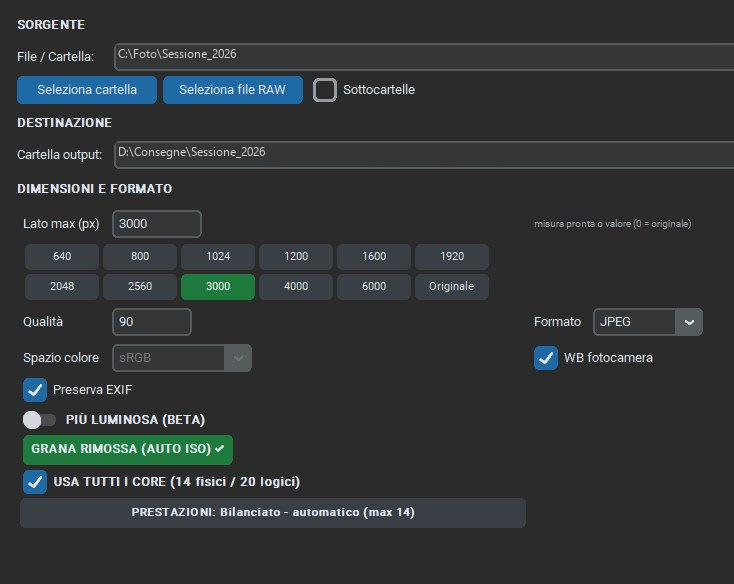
| Zona | Contenuto | Quando la usi |
|---|---|---|
| SORGENTE | Campo percorso, Seleziona cartella, Seleziona file RAW, casella Sottocartelle. | All'inizio di ogni lavoro, per dire al programma quali foto leggere. |
| DESTINAZIONE | Campo Cartella output e pulsante Sfoglia. | Subito dopo la sorgente: è la cartella in cui verranno scritti i risultati. |
| DIMENSIONI E FORMATO | Lato massimo, misure pronte, qualità, formato, spazio colore, WB fotocamera, EXIF. | Per decidere peso e destinazione d'uso dei file. |
| Automatismi | PIÙ LUMINOSA, RIMUOVI GRANA, USA TUTTI I CORE, PRESTAZIONI. | Per migliorare le foto e gestire la velocità senza toccare gli slider. |
La colonna destra contiene l'anteprima PRIMA / DOPO, il pulsante per aprirla in grande, la scheda CORREZIONI RAPIDE e il grande pulsante AVANZATE. È il posto in cui controlli il risultato mentre cambi le impostazioni: ogni modifica aggiorna l'anteprima senza rileggere il RAW da disco.
| Elemento | Cosa fa |
|---|---|
| AVVIA CONVERSIONE BATCH | Avvia il lavoro con le impostazioni correnti. Diventa non disponibile durante l'elaborazione. |
| ANNULLA | Interrompe il batch. I file già completati restano; quelli parziali vengono rimossi. |
| ANALIZZA FILE | Analizza i file e prepara un piano di correzione per ciascuno, senza convertire nulla. |
| Usa correzioni per file | Applica i suggerimenti dell'analisi invece delle sole impostazioni globali. |
| Barra di avanzamento | Mostra l'avanzamento; durante il lavoro visualizza anche file/min ed ETA. |
| Apri cartella output | Apre Esplora file nella destinazione scelta. |
| Barra di stato | A sinistra il messaggio corrente (Pronto, Analisi, Completato…); a destra il percorso della cartella di output quando è impostata. |
Questa è la schermata in cui passi la maggior parte del tempo. Ogni blocco ha un compito preciso; qui sotto trovi la spiegazione di ogni campo, con i valori consigliati.
| Elemento | Cosa fa | Come si usa |
|---|---|---|
| File / Cartella | Mostra il percorso scelto. Può contenere più percorsi separati da punto e virgola. | Scrivi o incolla un percorso; premi Invio per aggiornare l'anteprima. |
| Seleziona cartella | Apre la finestra di Windows per scegliere una cartella. | Converte tutti i file supportati presenti nella cartella. |
| Seleziona file RAW | Apre la selezione file multipla. | Tieni premuto Ctrl o Maiusc per scegliere più file; converte solo quelli. |
| Sottocartelle | Se attiva, entra anche nelle sottocartelle. | Utile per archivi organizzati per giorno o per evento. La cartella di output viene esclusa automaticamente. |
Il campo Cartella output indica dove vengono scritti i file finiti. Sfoglia apre la scelta della cartella. La destinazione viene ricordata e mostrata anche nella barra di stato in basso a destra.
Il valore è il lato lungo massimo dell'immagine finale. Puoi scriverlo nel campo oppure premere uno dei pulsanti pronti; il pulsante attivo diventa verde. 0 e Originale significano nessun ridimensionamento.
| Misura | Uso tipico |
|---|---|
| 640 / 800 | Miniature, anteprime molto leggere, blog. |
| 1024 / 1200 | Web veloce, documenti, gallery leggere. |
| 1600 / 1920 | Web di qualità, Full HD, social. |
| 2048 / 2560 | Social definiti, schermi 2K/4K, stampe piccole. |
| 3000 (predefinito) | Dettaglio, ingrandimenti, ritratti, stampe 20×30 cm. |
| 4000 / 6000 | Stampe grandi e archival. |
| Originale | Nessuna riduzione: risoluzione nativa del RAW. |
Valore da 1 a 100. Per JPEG e WebP è il compromesso tra peso e dettaglio. 90 è il valore predefinito e va bene per la maggior parte dei lavori; 85 per file più leggeri, 95 per stampe e consegne, 100 per il massimo (file molto più grandi). Per PNG e TIFF la qualità non si applica: sono formati senza perdita.
| Formato | Quando usarlo | Attenzione |
|---|---|---|
| JPEG | Web, social, consegna al cliente, condivisione. | Perdita leggera: non riaprire e risalvare molte volte. |
| PNG | Grafica, schermate, immagini con testi. | File molto grandi; non serve per normali foto RAW. |
| TIFF | Archiviazione, stampa professionale, post-produzione. | File molto grandi; compressione LZW senza perdita. |
| WEBP | Siti web moderni, immagini leggere. | Meno compatibile con programmi molto vecchi. |
| Controllo | Cosa fa | Consiglio |
|---|---|---|
| Spazio colore | Fissato a sRGB, lo standard più compatibile con web, social, Windows e laboratori. | Non è un'impostazione da cambiare. |
| WB fotocamera | Usa il bilanciamento del bianco impostato nella fotocamera al momento dello scatto. | Attivo nella maggior parte dei casi: colori fedeli allo scatto. |
| Preserva EXIF | Salva data, fotocamera, obiettivo, ISO, tempi, diaframma, GPS e orientamento. | Attivo. L'EXIF viene inserito nei JPEG; PNG, TIFF e WebP non ricevono gli stessi metadati in questa versione. |
| Comando | Cosa fa | Quando usarlo |
|---|---|---|
| PIÙ LUMINOSA (BETA) | Intervento automatico e conservativo su esposizione, alte luci e vividezza. Non trasforma la notte in giorno. | Foto scure, controluce, interni, giornate nuvolose. Evitalo su still life delicati e notturni d'atmosfera. |
| RIMUOVI GRANA (AUTO ISO) | Preset intelligente di denoise: imposta riduzione rumore 88/92 e nitidezza 0,9/0,9, con forza calibrata sull'ISO del RAW. Se attivo diventa verde e mostra GRANA RIMOSSA (AUTO ISO) ✓. | ISO 800+, interni, sera, concerti, sport. È attivo di default. Premilo di nuovo per ripristinare i valori precedenti. |
| USA TUTTI I CORE | Abilita l'elaborazione multi-processo. Il numero tra parentesi indica i core fisici e logici rilevati sul PC. | Attivo. Se hai poca RAM o file enormi, il programma riduce da solo i processi. |
| PRESTAZIONI | Apre il pannello con profilo, numero processi, benchmark e stima. L'etichetta riassume lo stato, per esempio Bilanciato - automatico (max 14). | Prima di un batch importante o quando vuoi capire quanto tempo servirà. |
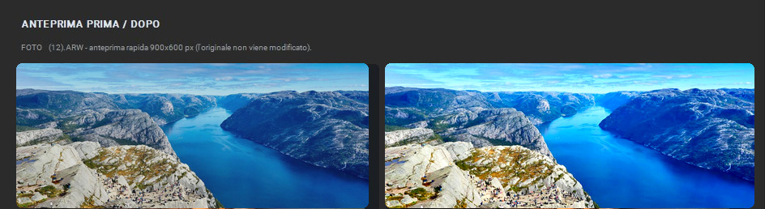
| Elemento | Cosa mostra |
|---|---|
| Riga informativa | Nome del file, dimensione dell'anteprima (per esempio 900×600 px) e la frase l'originale non viene modificato. |
| PRIMA | L'immagine di partenza, decodificata dal RAW o letta dal file. |
| DOPO | Il risultato con le impostazioni correnti: profilo, correzioni rapide, slider e resa finale. |
| APRI ANTEPRIMA GRANDE | Apre la finestra dedicata con le due immagini affiancate (capitolo 5). |
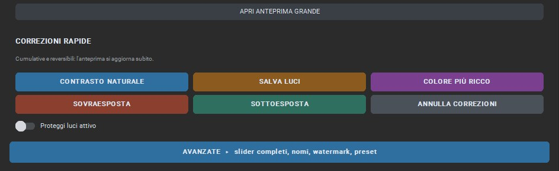
| Pulsante | Cosa modifica davvero | Quando usarlo |
|---|---|---|
| CONTRASTO NATURALE | Contrasto +0,14 (fino a 0,95), chiarezza +0,06, neri −5, bianchi +4. | Foto piatte, nuvolose, senza profondità. |
| SALVA LUCI | Attiva la protezione luci e riduce luci/bianchi. Il pulsante diventa verde e l'interruttore Proteggi luci attivo si seleziona. | Cielo bianco, finestre, vestiti chiari, controluce. |
| COLORE PIÙ RICCO | Vivacità +0,14, saturazione +0,06, saturazione rossi/verdi/blu +2. | Colori spenti, autunno, tramonti, mare. |
| SOVRAESPOSTA | Esposizione più bassa e luci ridotte. | Foto troppo chiare o con alte luci critiche. |
| SOTTOESPOSTA | Esposizione +0,35 EV, ombre +18, neri +5. | Foto scure, interni, notturni. |
| ANNULLA CORREZIONI | Ripristina i valori di prima della prima correzione rapida. | Dopo una o più correzioni, se il risultato non convince. |
| Proteggi luci attivo | Interruttore della compressione delle alte luci. | Resta attivo finché non lo spegni o non annulli le correzioni. |
Il pulsante blu AVANZATE ▸ slider completi, nomi, watermark, preset apre una finestra separata con tutti i controlli di sviluppo e di output. È spiegata nel capitolo 6. Le modifiche si riflettono subito sull'anteprima della scheda Batch.
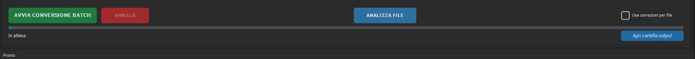
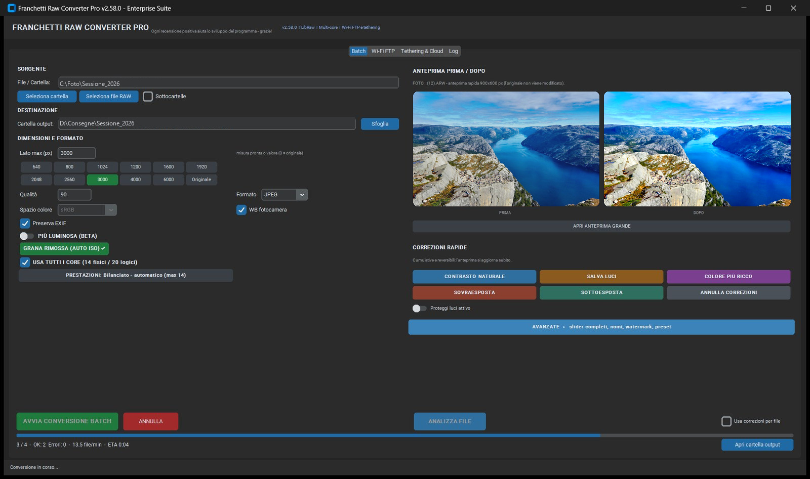
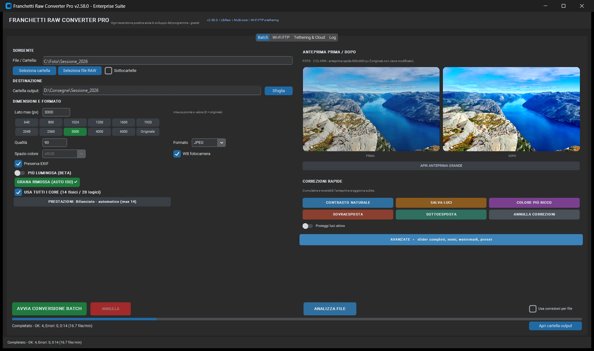
| Indicazione | Significato |
|---|---|
| 3 / 4 | File completati sul totale. Il conteggio include OK, errori e saltati. |
| OK / Errori / Saltati | Esito per file. Un errore non blocca il batch: il programma continua con gli altri. |
| file/min | Velocità calcolata sul lavoro già completato. |
| ETA | Tempo rimanente stimato, aggiornato durante il lavoro. |
| Suffisso _1 | Con l'opzione Se esiste: Rinomina, un nome già presente diventa FOTO_1.jpg, poi _2, e così via. |
FOTO (12).ARW diventa FOTO (12).jpg.FRC_ e _web.Questa procedura porta da una cartella di RAW a un gruppo di JPEG pronti, con le impostazioni consigliate. Richiede pochi minuti.
| Controllo finale | Cosa verificare |
|---|---|
| File prodotti | Il numero corrisponde a quello atteso? Ci sono Saltati o Errori? |
| Dimensione | Il lato lungo è quello scelto? Il file non è stato ingrandito oltre il nativo? |
| Colore | La pelle non è arancione, il cielo non è viola, i bianchi non sono bruciati. |
| Dettaglio | Gli ingrandimenti al 100% non mostrano aloni o grana eccessiva. |
| Metadati | Data, fotocamera e copyright sono presenti nel JPEG (se Preserva EXIF e copyright sono attivi). |
La finestra grande serve a giudicare il risultato senza affaticare la vista sulle miniature. Non contiene controlli: è uno strumento di lettura, e le modifiche si fanno nella scheda Batch o in AVANZATE.
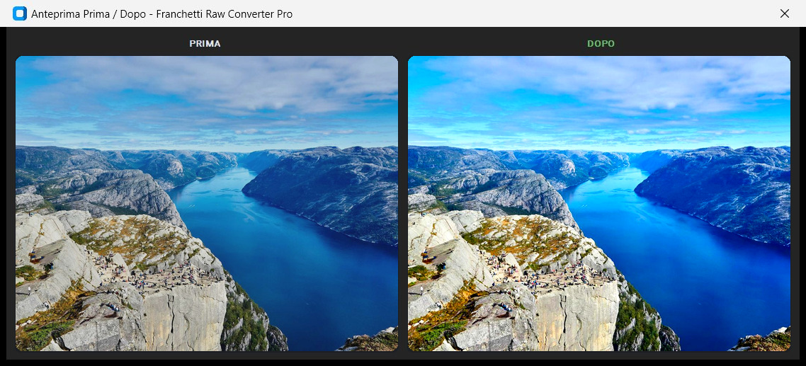
| Elemento | Cosa mostra | Come si usa |
|---|---|---|
| Barra del titolo | Anteprima Prima / Dopo - Franchetti Raw Converter Pro con Chiudi. | La finestra è separata: puoi spostarla su un secondo monitor. |
| PRIMA | Lo scatto di partenza. | Serve a ricordare com'era la foto, non a confrontare due elaborazioni diverse. |
| DOPO | Il risultato con tutte le impostazioni correnti. | È ciò che verrà scritto nel file. |
| Dimensioni | La finestra si adatta e mantiene le due immagini affiancate. | Ingrandisci la finestra per vedere più dettaglio. |
PRIMA è l'immagine di partenza decodificata: per un RAW è la resa di base, non un file già sviluppato. DOPO è la pipeline completa con profilo prestazioni, WB, correzioni, curva, nitidezza e denoise. Per questo il DOPO può essere più scuro o più chiaro del PRIMA: non è un errore, è lo sviluppo.
Per chiuderla usa la X della barra del titolo. La finestra non modifica nulla e non chiede conferma.
| Zona | Cosa controllare | Segnale d'allarme |
|---|---|---|
| Pelle | Colore naturale, texture visibile, nessuna macchia. | Pelle arancione, plastica o con chiazze verdi. |
| Alte luci | Cielo, finestre e vestiti bianchi conservano dettaglio. | Bianco uniforme senza sfumature: il dettaglio non c'è. |
| Ombre | Dettaglio nelle zone scure senza rumore evidente. | Ombre grigie e rumorose, aloni intorno ai contorni. |
| Colore | Rossi, verdi e blu distinti e credibili. | Blu del cielo viola, verdi fluorescenti, dominante generale. |
| Dettaglio | Capelli, tessuti e pietre restano definiti senza effetto cartoon. | Aloni chiari sui bordi o grana eccessiva. |
La finestra REGOLAZIONI AVANZATE contiene tutti i controlli di sviluppo e di output. Si apre dal pulsante blu della scheda Batch e resta separata dalla finestra principale: puoi tenerla aperta su un secondo monitor mentre lavori. Ogni modifica si riflette subito sull'anteprima PRIMA/DOPO.
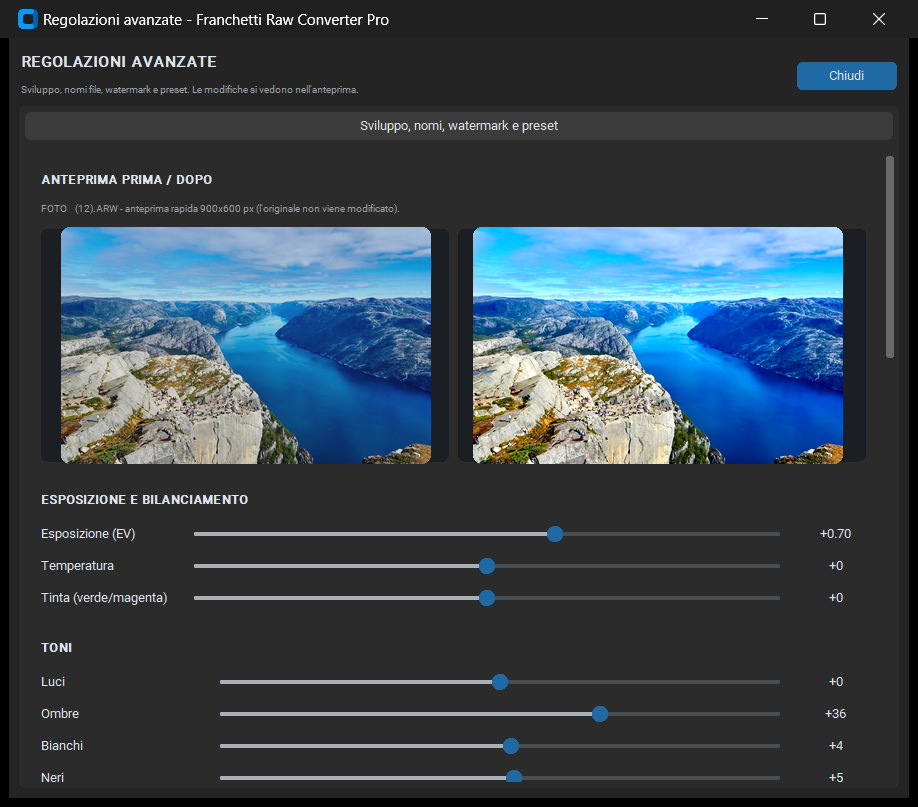
| Zona | Contenuto | A cosa serve |
|---|---|---|
| Testata | Titolo REGOLAZIONI AVANZATE, sottotitolo e pulsante Chiudi. | Chiudere la finestra applica i valori correnti all'anteprima e nasconde la finestra. |
| Anteprima PRIMA / DOPO | Le stesse due immagini della scheda Batch, in formato più grande. | Controllare l'effetto di ogni slider senza tornare indietro. |
| ESPOSIZIONE E BILANCIAMENTO | Esposizione, temperatura, tinta. | Correggere luce e colore di base. |
| TONI | Luci, ombre, bianchi, neri. | Recuperare dettaglio nelle zone chiare e scure. |
| COLORE | Vivacità selettiva, saturazione, saturazione rossi/verdi/blu. | Dare carattere ai colori senza virarli. |
| DETTAGLIO E NITIDEZZA | Chiarezza, dehaze, nitidezza, riduzione rumore. | Migliorare micro-contrasto e pulizia. |
| EFFETTI | Vignettatura e grana. | Finitura creativa o look analogico. |
| CURVA TONALE E SPLIT TONING | Curva, colori e intensità di ombre e luci. | Contrasto e look cinematografico. |
| NOMI FILE E SOVRASCRITTURA | Nome originale, prefisso, suffisso, comportamento se il file esiste. | Decidere come si chiamano i file esportati. |
| WATERMARK | Testo, font, posizione, logo PNG, autore EXIF. | Firma visibile e copyright nei metadati. |
| PRESET E CONFIGURAZIONE | Preset pronti, salva/carica configurazione, ripristino. | Riutilizzare le stesse impostazioni su più lavori. |
| Controllo | Effetto | Consiglio pratico |
|---|---|---|
| Esposizione (EV) | Rende l'immagine più chiara o più scura. Il valore mostrato è in stop (per esempio +0,70). | Correzioni entro ±0,7 EV sono quasi sempre naturali. Oltre ±1,5 EV controlla il rumore nelle ombre o le alte luci. |
| Temperatura | Sposta il bianco verso il blu (valori negativi) o verso l'ambra (positivi). | Con WB fotocamera attivo parti da 0. Usa la temperatura solo per correggere una dominante reale. |
| Tinta (verde/magenta) | Corregge le dominanti verdi o magenta. | Piccoli passi: ±5–10. Una tinta forte su tutta la scena è spesso una scelta creativa. |
I quattro cursori lavorano su intervalli diversi della luminosità. Sono lo strumento principale per recuperare una foto difficile senza cambiare l'esposizione globale.
| Cursore | Zona che governa | Quando intervenire |
|---|---|---|
| Luci | Le zone più chiare, come cielo, finestre e vestiti bianchi. | Valori negativi recuperano dettaglio. Con Proteggi luci attivo la compressione è più morbida. |
| Ombre | Le zone scure, come interni, capelli e foglie. | Valori positivi aprono le ombre, ma alzano anche il rumore: usa 10–25, non 80. |
| Bianchi | Il punto più luminoso dell'immagine. | Alza se la foto è spenta; abbassa se i bianchi sono bruciati. |
| Neri | Il punto più scuro e la profondità delle ombre. | Valori negativi danno corpo e contrasto; valori positivi schiariscono le ombre profonde. |
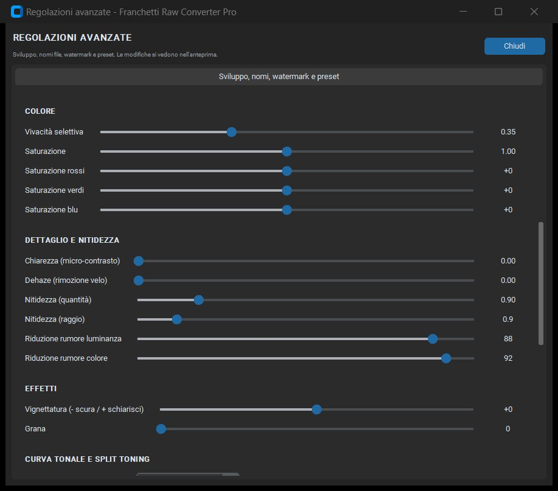
| Controllo | Cosa fa | Consiglio |
|---|---|---|
| Vivacità selettiva | Aumenta i colori spenti senza esaltare quelli già intensi. Il valore 0,35 è un buon punto di partenza. | Per ritratti resta sotto 0,5: la pelle non diventa arancione. |
| Saturazione | Aumenta o riduce tutti i colori in modo uniforme. Il valore 1,00 è neutro. | Preferisci la vivacità selettiva; usa la saturazione per correzioni globali decise. |
| Saturazione rossi | Agisce solo sul canale rosso (labbra, tessuti, tramonti). | +5…+15 per colori più pieni; negativo per spegnere un rosso troppo acceso. |
| Saturazione verdi | Agisce su prati, foglie e vegetazione. | Negativo per verdi più naturali, positivo per un look più vivo. |
| Saturazione blu | Agisce su cielo e acqua. | Un blu troppo saturo diventa artificiale: controlla sempre il cielo nell'anteprima. |
| Controllo | Cosa fa | Consiglio |
|---|---|---|
| Chiarezza (micro-contrasto) | Aumenta il contrasto locale nei dettagli medi. Effetto punch su pietre, tessuti e capelli. | 0,10–0,30 per un risultato naturale. Oltre 0,5 compaiono aloni. |
| Dehaze (rimozione velo) | Riduce la foschia e il velo atmosferico, aumentando contrasto e saturazione sulle distanze. | 5–20 per paesaggi. Attenzione ai cieli: il dehaze può crearne il bordo. |
| Nitidezza (quantità) | Controlla quanto viene applicata la nitidezza finale. | 0,8–1,0 è il range tipico. Con RIMUOVI GRANA attivo il valore viene impostato a 0,90. |
| Nitidezza (raggio) | Controlla lo spessore del dettaglio esaltato. | Raggio piccolo per dettagli fini, più grande per immagini morbide o ridimensionate. |
| Riduzione rumore luminanza | Elimina la grana nei toni chiari e medi. Valore 88 nel profilo Bilanciato. | Alzala per ISO alti; abbassala per conservare la texture della pelle. |
| Riduzione rumore colore | Elimina le macchie colorate (verdi/magenta) nelle ombre. Valore 92 nel profilo Bilanciato. | Puoi tenerla alta quasi sempre: il dettaglio di luminanza resta. |
| Controllo | Effetto | Consiglio |
|---|---|---|
| Vignettatura | Valori negativi scuriscono gli angoli, positivi li schiariscono. | −10…−25 per concentrare l'attenzione sul soggetto. Oltre −40 è un effetto evidente. |
| Grana | Aggiunge una texture analogica uniforme. | 5–15 per un look pellicola discreto; 30+ per un effetto dichiarato. |
La curva tonale applica un contrasto predefinito ai toni. Lo split toning colora separatamente ombre e luci: è il modo più semplice per ottenere un look caldo/freddo senza cambiare il bilanciamento del bianco.
| Voce | Effetto |
|---|---|
| Lineare | Nessuna curva: massimo controllo naturale. |
| Media | Contrasto leggero. |
| Forte | Contrasto deciso. |
| Contrasto Alto | Contrasto molto marcato. |
| Schiarisci | Immagine più luminosa e aperta. |
| Scurisci | Immagine più scura e densa. |
| Split toning ombre | Intensità 0–100 e colore esadecimale (predefinito #2b4c7e, blu). |
| Split toning luci | Intensità 0–100 e colore esadecimale (predefinito #e0b070, caldo). |
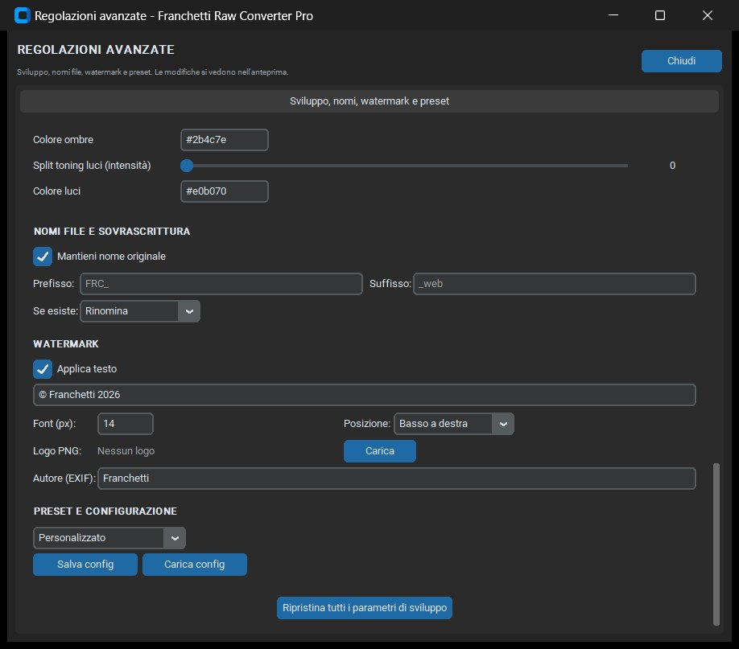
| Elemento | Cosa fa | Esempio |
|---|---|---|
| Mantieni nome originale | Conserva il nome del file di partenza e cambia solo l'estensione. | FOTO (12).ARW → FOTO (12).jpg. |
| Prefisso | Testo aggiunto prima del nome. | FRC_ → FRC_FOTO (12).jpg. |
| Suffisso | Testo aggiunto dopo il nome, prima dell'estensione. | _web → FOTO (12)_web.jpg. |
| Se esiste: Rinomina | Non sovrascrive: aggiunge un progressivo. | FOTO_1.jpg, FOTO_2.jpg. |
| Se esiste: Sovrascrivi | Sostituisce il file già presente. | Utile per rigenerare una consegna, rischioso se la cartella contiene altro. |
| Se esiste: Salta | Non converte il file e lo conta tra i saltati. | Per riprendere un batch interrotto senza duplicare. |
| Elemento | Cosa fa | Consiglio |
|---|---|---|
| Applica testo | Attiva o disattiva il watermark testuale sulle immagini esportate. | Attivo per anteprime cliente, spento per i file finali. |
| Testo | Il testo mostrato, per esempio © Franchetti 2026. | Usa il simbolo © e l'anno; evita testi lunghi che coprono il soggetto. |
| Font (px) | Dimensione del testo in pixel. | 14–24 su file web; su stampe grandi aumenta in proporzione. |
| Posizione | Dove appare il testo: Basso a destra, Basso a sinistra, Alto a destra, Alto a sinistra, Centro. | Basso a destra è la posizione più discreta e leggibile. |
| Logo PNG | Carica un'immagine PNG da sovrapporre al watermark testuale. | Usa un PNG con trasparenza e dimensioni contenute. |
| Autore (EXIF) | Nome scritto nel campo Autore dei metadati. | Compila sempre: è la base del copyright nelle consegne. |
| Preset | Impostazioni tipiche | Uso |
|---|---|---|
| Personalizzato | I valori correnti, senza modifiche automatiche. | Quando hai già messo a punto tutto a mano. |
| Web / Social | Lato 2048 px, JPEG qualità 85–90, profilo Veloce o Bilanciato. | Pubblicazione rapida, peso contenuto. |
| Stampa Fine Art | Lato originale o 6000 px, qualità alta, profilo Massima qualità. | Stampe grandi e file definitivi. |
| Archivio JPEG | Qualità alta, metadati preservati, nessun watermark. | Archiviazione ordinata e consultabile. |
| Ritratto | Denoise moderato, nitidezza controllata, colori naturali. | Pelle pulita senza effetto plastica. |
| Paesaggio | Chiarezza e dehaze più presenti, colori pieni. | Cielo, vegetazione, dettaglio sulle distanze. |
| Bianco e Nero | Saturazione azzerata e contrasto più deciso. | Conversione monocromatica rapida. |
Salva config scrive un file .json con tutte le impostazioni; Carica config lo rilegge. Ripristina tutti i parametri di sviluppo riporta slider e curva ai valori iniziali, senza toccare sorgente, destinazione e nomi file.
L'analisi legge i file, misura esposizione, luci, ombre, contrasto, colore e rumore, e propone una correzione conservativa per ciascuno. Non converte e non modifica nulla: serve a capire cosa fare prima di avviare il batch.
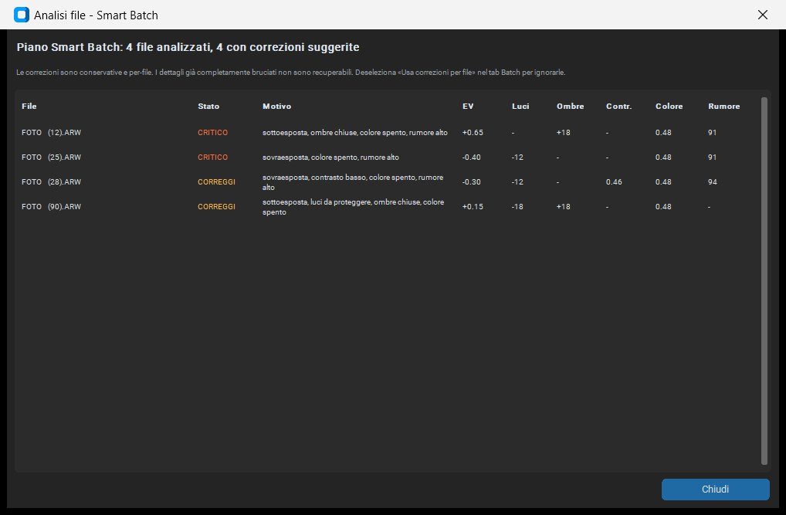
| Colonna | Cosa contiene | Come leggerla |
|---|---|---|
| File | Nome del file analizzato. | Ordina mentalmente per nome o per stato; il numero di righe è il numero di file letti. |
| Stato | CORREGGI (arancione) o CRITICO (rosso). Può comparire anche OK per file già equilibrati. | Correggi significa che il piano propone ritocchi; critico segnala un problema forte, spesso alte luci irrecuperabili. |
| Motivo | La diagnosi in parole: sottoesposta, sovraesposta, contrasto basso, colore spento, rumore alto, luci da proteggere. | È la spiegazione del perché il piano propone quei valori. |
| EV | Correzione di esposizione suggerita. | Applicata solo se attivi Usa correzioni per file. |
| Luci | Correzione delle alte luci. | Valori negativi proteggono i bianchi. |
| Ombre | Apertura delle zone scure. | Valori positivi schiariscono le ombre. |
| Contr. | Contrasto suggerito. | Utile per foto piatte o nuvolose. |
| Colore | Intervento su vivacità/saturazione. | Per soggetti spenti o dominanti. |
| Rumore | Forza del denoise suggerito. | Più alto per ISO elevati. |
Il pannello PRESTAZIONI ADATTIVE decide quanti processi usare e con quale cura elaborare le foto. Non è un interruttore «più veloce = meglio»: è un compromesso misurato tra tempo, RAM e qualità.
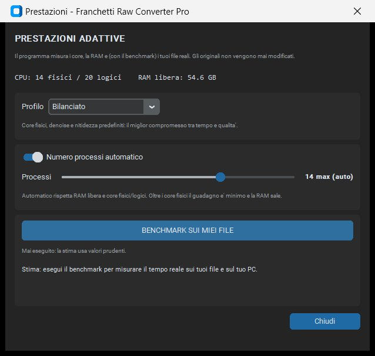
| Voce | Significato |
|---|---|
| CPU: 14 fisici / 20 logici | Core fisici e thread logici rilevati. I core fisici sono il riferimento per il massimo guadagno reale. |
| RAM libera | Memoria disponibile al momento. Se scende, il numero di processi viene ridotto per evitare swap. |
| Profilo | Veloce, Bilanciato o Massima qualità. Cambia denoise, nitidezza e tipo di core. |
| Numero processi automatico | Se attivo, il programma calcola i processi in base a RAM e core. Se lo spegni, usi lo slider manuale. |
| Processi | Numero di processi simultanei. In automatico mostra il massimo consigliato; in manuale puoi scegliere da 1 al numero di core logici. |
| BENCHMARK SUI MIEI FILE | Misura il tempo reale su una piccola copia dei tuoi file. Non modifica gli originali. |
| Stima | Dopo il benchmark mostra il tempo previsto per il batch corrente, in base a numero e peso dei file. |
| Profilo | Core usati | Denoise e nitidezza | Quando sceglierlo |
|---|---|---|---|
| Veloce | Tutti i core logici. | Denoise leggero: luminanza 70, colore 80, nitidezza 0,70. | Anteprime, selezione, consegne rapide, batch molto grandi. |
| Bilanciato | Core fisici. | Denoise e nitidezza predefiniti: luminanza 88, colore 92, nitidezza 0,90. | La scelta normale per la maggior parte dei lavori. |
| Massima qualità | Core fisici. | Denoise e nitidezza più curati: luminanza 95, colore 96, nitidezza 1,10. | Stampe, consegne finali, file che devono durare. |
Con Numero processi automatico attivo, il programma parte dai core fisici, controlla la RAM libera e riduce il numero se il peso dei file è alto. La soglia è adattiva: un batch di JPEG leggeri può usare più processi di un batch di RAW da 60 MP. L'override manuale prevale sempre: se imposti 4, il programma usa 4.
frc_benchmark_, elabora un campione e la elimina.Il server FTP integrato trasforma il PC in una destinazione di rete per la fotocamera. Appena arriva uno scatto, il programma sviluppa il RAW, crea un'anteprima JPEG e aggiorna la galleria cliente. L'originale resta intatto.
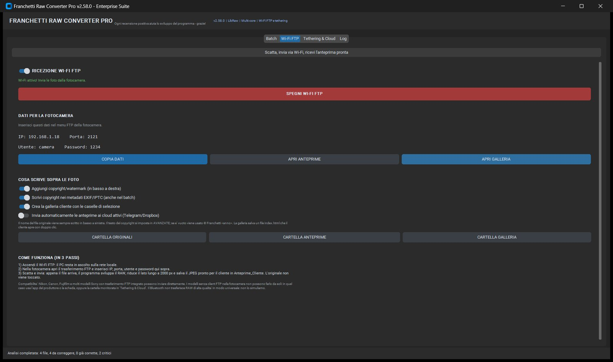
| Elemento | Cosa fa | Come si usa |
|---|---|---|
| Interruttore RICEZIONE WI-FI FTP | Avvia o ferma il server FTP locale. | Attivalo solo quando la fotocamera deve inviare. Il server ascolta sulla rete locale, non su Internet. |
| SPEGNI WI-FI FTP | Ferma il server e mostra lo stato inattivo. | Usalo a fine sessione per chiudere la porta e liberare le risorse. |
| IP | Indirizzo del PC sulla rete locale, per esempio 192.168.1.18. | Va inserito nella configurazione FTP della fotocamera. |
| Porta | 2121. | Non è la 21 standard: evita conflitti con altri server FTP. |
| Utente | camera. | Credenziale locale, valida solo mentre il server è attivo. |
| Password | 1234. | Credenziale locale. Non riutilizzarla altrove. |
| COPIA DATI | Copia negli appunti IP, porta, utente e password. | Per incollarli nell'app o nel menu della fotocamera. |
| APRI ANTEPRIME | Apre la cartella delle anteprime della sessione. | Per controllare i JPEG appena arrivati. |
| APRI GALLERIA | Apre index.html della galleria cliente. | Solo dopo che la galleria è stata creata. |
| Opzione | Cosa fa | Default consigliato |
|---|---|---|
| Aggiungi copyright/watermark (in basso a destra) | Scrive il testo di copyright sull'anteprima, in basso a destra. | Attivo per le anteprime cliente. |
| Scrivi copyright nei metadati EXIF/IPTC (anche nel batch) | Inserisce il copyright nei metadati del JPEG e nel batch. | Attivo. |
| Crea la galleria cliente con le caselle di selezione | Genera Galleria_Cliente/<sessione>/index.html. | Attivo se consegni una selezione al cliente. |
| Invia automaticamente le anteprime ai cloud attivi (Telegram/Dropbox) | Invia l'anteprima ai servizi configurati. | Spento: l'invio automatico va attivato solo se serve. |
| Pulsante | Cartella | Contenuto |
|---|---|---|
| CARTELLA ORIGINALI | Pictures\FranchettiRawConverterPro\Tethering\Originali\<sessione> | I file ricevuti dalla fotocamera, mai modificati. |
| CARTELLA ANTEPRIME | ...\Anteprime_Cliente\<sessione> | I JPEG sviluppati, ridotti a un lato massimo di 2000 px, pronti per il cliente. |
| CARTELLA GALLERIA | ...\Galleria_Cliente\<sessione> | La pagina index.html con le anteprime e le caselle di selezione. |
index.html e la cartella delle anteprime devono restare nella stessa struttura. Se sposti solo la pagina HTML, le immagini non si vedono più. Per consegnare, copia insieme le cartelle Galleria_Cliente\<sessione> e Anteprime_Cliente\<sessione>.Originali\<sessione> e genera l'anteprima.DIRECT-xxxx e usa l'IP mostrato dal programma.| Aspetto | Cosa sapere |
|---|---|
| Rete locale | Il server ascolta sull'indirizzo LAN del PC, non su Internet. Non aprire la porta sul router e non usarlo su reti pubbliche. |
| Credenziali | Utente camera e password 1234 sono locali e valgono solo mentre il server è attivo. Non riutilizzarle per altri servizi. |
| Fine sessione | Spegni sempre il server con SPEGNI WI-FI FTP quando hai finito: la cartella resta, la porta si chiude. |
| File ricevuti | Gli originali nella cartella Originali non vengono modificati; le anteprime sono file separati. |
| Galleria | Non contiene credenziali e non chiama servizi esterni: è una pagina statica con immagini locali. |
La galleria è una singola pagina HTML autonoma. Il cliente la apre con un doppio clic, guarda le anteprime, spunta le foto che gli piacciono e copia l'elenco dei nomi. Non serve un server, non serve Internet e non serve installare nulla.
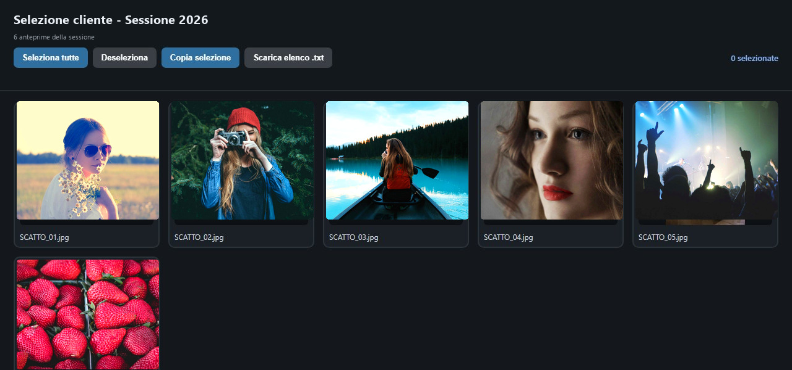
| Elemento | Cosa fa | Come si usa |
|---|---|---|
| Titolo | Il nome della consegna, per esempio Selezione cliente - Sessione 2026. | Nella galleria generata dall'app è Selezione cliente, con la sessione indicata nel sottotitolo. |
| Sottotitolo | Una riga descrittiva con le istruzioni e il nome della sessione. | Spiega al cliente cosa fare senza bisogno di altre indicazioni. |
| Seleziona tutte | Spunta tutte le caselle in un colpo solo. | Per un cliente che vuole tutto, o per partire da una selezione completa. |
| Deseleziona | Toglie tutte le spunte. | Per ricominciare la selezione. |
| Copia selezione | Copia negli appunti l'elenco dei nomi selezionati, uno per riga. | Il cliente lo incolla in un'email o in un messaggio. |
| Scarica elenco .txt | Scarica un file di testo con i nomi selezionati. | Alternativa a Copia selezione, utile se gli appunti non funzionano. |
| Contatore | Mostra quante foto sono selezionate. | Conferma immediata prima di inviare l'elenco. |
| Scheda foto | Anteprima, casella di spunta e nome del file. | Un clic sulla casella seleziona o deseleziona. |
La galleria nasce in due modi: dal pulsante APRI GALLERIA della scheda Wi-Fi FTP, che la crea o la rigenera, oppure automaticamente durante una sessione FTP se è attiva l'opzione Crea la galleria cliente con le caselle di selezione. Il file prodotto è Galleria_Cliente\<sessione>\index.html; le immagini puntano a ..\Anteprime_Cliente\<sessione>.
Anteprime_Cliente\<sessione> e Galleria_Cliente\<sessione>.index.html: devono comparire tutte le anteprime.index.html, le anteprime non si caricano. Mantieni la struttura Galleria_Cliente\<sessione> e Anteprime_Cliente\<sessione> allo stesso livello.| Contenuto | Perché serve |
|---|---|
Cartella Galleria_Cliente\<sessione> | Contiene index.html, cioè la pagina che il cliente apre. |
Cartella Anteprime_Cliente\<sessione> | Contiene le immagini collegate dalla pagina. Senza, la galleria resta vuota. |
| Istruzioni in due righe | Spunta le foto, premi Copia selezione o Scarica elenco .txt, invia l'elenco. |
| Un archivio unico | Se usi uno ZIP, comprimi insieme le due cartelle della stessa sessione, mantenendo i nomi Anteprime_Cliente e Galleria_Cliente. |
Anteprime_Cliente rompe i collegamenti.La scheda Tethering & Cloud raccoglie tre cose diverse: il tethering Sony via Wi-Fi diretto, la cartella monitorata per le altre marche e le credenziali per l'invio ai servizi cloud. Sono strumenti separati: puoi usarne uno senza gli altri.
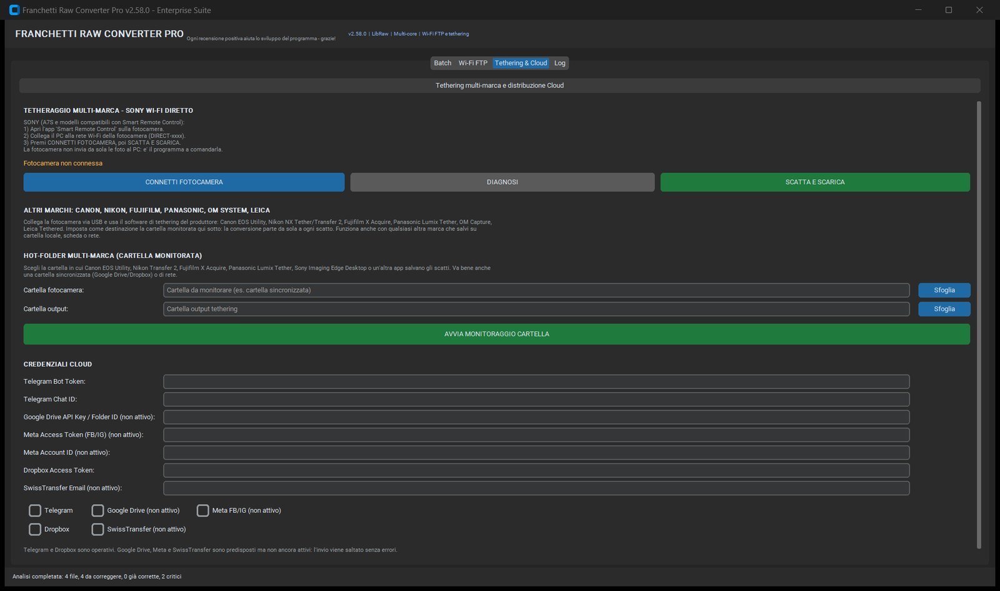
| Elemento | Cosa fa | Come si usa |
|---|---|---|
| CONNETTI FOTOCAMERA | Cerca la fotocamera Sony sulla rete Wi-Fi direct e apre la sessione remota. | Prima attiva Smart Remote Control sulla fotocamera e collega il PC alla rete DIRECT-xxxx. |
| DIAGNOSI | Mostra lo stato della connessione e le API disponibili. | Usala se la fotocamera risponde ma lo scatto non parte. |
| SCATTA E SCARICA | Comanda lo scatto e scarica il file sul PC. | La fotocamera non invia da sola: è il programma a comandarla. |
| Stato | Fotocamera non connessa o messaggio di connessione riuscita. | Se resta non connessa, controlla la rete Wi-Fi e l'app della fotocamera. |
Per Canon, Nikon, Fujifilm, Panasonic, OM System e Leica si usa il software del produttore (Canon EOS Utility, Nikon NX Tether, Fujifilm X Acquire, Panasonic Lumix Tether, OM Capture, Leica Tether). Quel software salva gli scatti in una cartella; il programma la monitora e converte ciò che arriva.
| Elemento | Cosa fa | Come si usa |
|---|---|---|
| Cartella da monitorare | La cartella in cui il software della fotocamera salva gli scatti. | Può essere anche una cartella sincronizzata da Google Drive o Dropbox. |
| Sfoglia (monitorata) | Sceglie la cartella da osservare. | Seleziona la cartella di destinazione del software del produttore. |
| Cartella output | Dove vengono scritti i file convertiti. | Diversa dalla cartella monitorata, per evitare loop. |
| Sfoglia (output) | Sceglie la destinazione. | Puoi usare una cartella di sessione o una cartella sincronizzata. |
| AVVIA MONITORAGGIO CARTELLA | Avvia il controllo periodico della cartella. | Ogni nuovo file viene convertito con le impostazioni correnti. |
| Campo / servizio | Stato | Note |
|---|---|---|
| Telegram Bot Token | Attivo | Token del bot creato con BotFather. |
| Telegram Chat ID | Attivo | ID della chat o del canale in cui inviare. |
| Google Drive API Key / Folder ID | Non attivo | Campo predisposto, invio non ancora disponibile. |
| Meta Access Token (FB/IG) | Non attivo | Campo predisposto, invio non ancora disponibile. |
| Meta Account ID | Non attivo | Campo predisposto. |
| Dropbox Access Token | Attivo | Token dell'app Dropbox. |
| SwissTransfer Email | Non attivo | Campo predisposto, invio non ancora disponibile. |
| Caselle di invio | Telegram e Dropbox operativi | Le altre sono visibili ma disattivate. Un invio verso un servizio non attivo viene saltato senza errori. |
DIRECT-xxxx della fotocamera.| Origine | Cosa arriva | Dove finisce |
|---|---|---|
| Sony Wi-Fi diretto | Lo scatto comandato dal programma, scaricato sul PC. | Cartella di lavoro scelta per il tethering. |
| Hot-folder | Il file salvato dal software del produttore o dalla sincronizzazione. | Cartella output del monitoraggio. |
| Cloud | Solo le anteprime o i file selezionati, secondo il flusso. | Telegram o Dropbox, se configurati e attivi. |
| Server FTP | Il file inviato dalla fotocamera. | Originali\<sessione>, poi anteprima e galleria. |
| Sintomo | Causa probabile | Rimedio |
|---|---|---|
| CONNETTI FOTOCAMERA non trova nulla | PC non collegato alla rete DIRECT-xxxx o app remota non avviata. | Attiva Smart Remote Control, riconnetti il Wi-Fi e riprova. |
| La fotocamera risponde ma non scatta | Modalità remota in stato intermedio. | Premi DIAGNOSI, attendi il reset e ripeti lo scatto. |
| Il file non compare nella cartella | Cartella monitorata o output diversa da quella attesa. | Controlla i due campi nella scheda e riavvia il monitoraggio. |
| Il cloud non riceve l'anteprima | Token assente, casella non attiva o servizio non supportato. | Configura Telegram o Dropbox e attiva la casella corrispondente. |
Il Log è il registro cronologico di tutto ciò che fa il programma: avvio, analisi, conversione, FTP, cloud, errori. È lo strumento più utile quando qualcosa non torna, perché dice cosa è successo e quando.
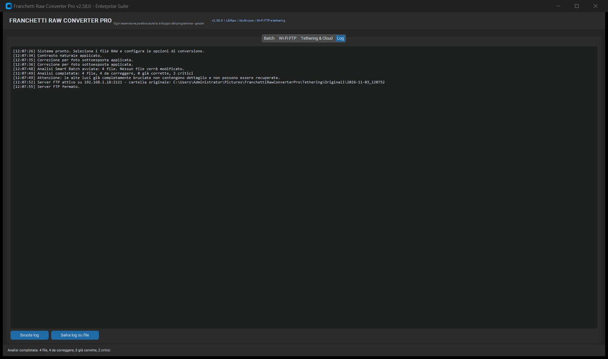
| Parte | Esempio | Significato |
|---|---|---|
| Orario | [12:07:34] | Ora locale dell'evento. Utile per correlare più operazioni. |
| Messaggio | Contrasto naturale applicato. | L'azione o l'esito. I messaggi sono in italiano semplice. |
| Avvio batch | Batch avviato: 4 file -> ... | Numero di file e cartella di destinazione. |
| Analisi | Analisi completata: 4 file, 4 da correggere, 0 già corrette, 2 critici | Riepilogo dell'analisi, con il numero di file critici. |
| FTP | Server FTP attivo su 192.168.1.18:2121 | Indirizzo e cartella di sessione creati. |
| Errore | Errore: ... | Il file non è stato convertito. Il batch continua con gli altri. |
| Fine | Batch terminato: OK 4, errori 0, saltati 0 | Riepilogo finale con durata e velocità. |
.txt con tutto il registro. Allegato a una segnalazione, è la diagnosi più utile.| Messaggio / sintomo | Causa probabile | Rimedio |
|---|---|---|
| Nessun file trovato | La sorgente non contiene formati supportati, oppure il percorso è errato. | Controlla il campo SORGENTE e l'estensione dei file. |
| Errore durante lo sviluppo | RAW danneggiato o non supportato dalla versione di LibRaw. | Prova ad aprire il file con un altro programma; aggiorna l'app. |
| Impossibile scrivere nella destinazione | Cartella in sola lettura, disco pieno o percorso non valido. | Scegli un'altra cartella o libera spazio. |
| FTP non parte | Porta occupata da un altro programma, firewall, rete diversa. | Chiudi altri server FTP, consenti l'app nel firewall, verifica l'IP. |
| La galleria non mostra le immagini | HTML e anteprime sono stati separati. | Ripristina la struttura di cartelle o rigenera la galleria. |
| Invio cloud saltato | Servizio non attivo o token mancante. | Configura il token e attiva la casella del servizio. |
Quattro scenari completi, con le impostazioni da scegliere e i passaggi nell'ordine giusto. Ogni flusso parte dalla scheda Batch e usa solo funzioni descritte nei capitoli precedenti.
| Impostazione | Valore |
|---|---|
| Lato massimo | 2048 px |
| Formato / qualità | JPEG / 85–90 |
| Profilo prestazioni | Veloce o Bilanciato |
| Automatismi | RIMUOVI GRANA attivo, PIÙ LUMINOSA solo se serve |
| Watermark | Spento (o discreto, se le foto sono anteprime) |
| EXIF | Preserva EXIF attivo |
index.html e le anteprime.| Impostazione | Valore |
|---|---|
| Lato massimo | Originale o 6000 px |
| Formato / qualità | TIFF (archivio/stampa) o JPEG 95–100 |
| Profilo prestazioni | Massima qualità |
| Nitidezza | 0,9–1,1, raggio adatto alla stampa |
| Denoise | Secondo ISO; non esagerare sulla pelle |
| Watermark | Spento |
Per l'archivio a lungo termine, conserva sempre i RAW originali accanto ai TIFF/JPEG finali. Il programma non sostituisce il backup: aggiunge un livello di output.
Le situazioni più frequenti, con la causa probabile e il rimedio. Se il problema resta, apri il Log, salvalo su file e allega quel file alla segnalazione.
| Problema | Causa probabile | Cosa fare |
|---|---|---|
| L'anteprima resta sul segnaposto | Percorso non valido, file non supportato o primo file ancora in lettura. | Premi Invio nel campo SORGENTE, controlla l'estensione, prova con un altro RAW. |
| Il batch è molto lento | Profilo Massima qualità, RAW grandi, pochi processi per poca RAM. | Passa a Bilanciato o Veloce, chiudi altri programmi, lascia automatico il numero di processi. |
| Il PC si blocca durante il batch | Troppi processi o RAM insufficiente. | Riduci i processi di 1–2; usa un profilo più leggero; converti a gruppi. |
| I colori sono diversi dal previsto | WB fotocamera spento, preset creativo, split toning o monitor non calibrato. | Controlla WB, preset e split toning; ripristina i parametri di sviluppo e verifica su un monitor calibrato. |
| Le foto sono troppo morbide o troppo nitide | Nitidezza/raggio o denoise non adatti. | Riduci la nitidezza, alza leggermente il raggio, riduci il denoise sulla pelle. |
| Il file esportato è più grande del previsto | Lato Originale, qualità 100, PNG/TIFF. | Usa 2048–3000 px, JPEG 85–90. |
| Il cliente non riesce ad aprire la galleria | Ha ricevuto solo l'HTML o la cartella è stata rinominata. | Invia la cartella intera; verifica che le anteprime siano al posto giusto. |
| La fotocamera non si connette in FTP | Rete diversa, IP errato, porta occupata, firewall. | Stessa rete, COPIA DATI, chiudi altri FTP, consenti l'app nel firewall. |
| La fotocamera Sony non scatta | Modalità remota in stato intermedio. | DIAGNOSI, attendi il reset, riprova; riavvia Smart Remote Control. |
| Il cloud non riceve nulla | Token mancante, casella non attiva, servizio non supportato. | Configura Telegram o Dropbox, attiva la casella, controlla il Log. |
| SmartScreen blocca l'avvio | Eseguibile non firmato digitalmente. | Ulteriori informazioni → Esegui comunque; usa l'installer o la versione portabile. |
Una pagina sola con i comandi e i valori che servono più spesso. Tienila accanto al PC durante il lavoro.
192.168.x.x, porta 2121, utente camera, password 1234.index.html.| Termine | Significato |
|---|---|
| RAW | File grezzo della fotocamera: contiene i dati del sensore, non un'immagine già sviluppata. |
| LibRaw | Libreria che decodifica i RAW di molte marche. È il motore di lettura del programma. |
| Demosaic | Ricostruzione del colore da un sensore che misura un solo canale per pixel. |
| WB | Bilanciamento del bianco: rende neutri i bianchi e corregge le dominanti di colore. |
| EV | Esposizione misurata in stop. +1 EV raddoppia la luce, −1 EV la dimezza. |
| Luminanza | Informazione di brightness. La riduzione rumore di luminanza agisce sulla grana. |
| Crominanza | Informazione di colore. La riduzione rumore di colore elimina le macchie verdi/magenta. |
| Vivacità | Saturazione selettiva: esalta i colori spenti e lascia stare quelli già intensi. |
| Dehaze | Rimozione del velo atmosferico; aumenta contrasto e saturazione sulle distanze. |
| Split toning | Colorazione separata di ombre e luci. |
| EXIF | Metadati dello scatto: fotocamera, obiettivo, ISO, tempi, diaframma, GPS. |
| IPTC | Metadati descrittivi: autore, copyright, descrizione, parole chiave. |
| Hot-folder | Cartella monitorata: tutto ciò che compare viene convertito. |
| FTP | Protocollo di trasferimento file. Qui è usato sulla rete locale, non su Internet. |
| ETA | Tempo rimanente stimato per completare il batch. |
| Benchmark | Misura del tempo reale su un campione di file, per stimare il batch. |
Per ogni file il programma segue un ordine preciso. Il ridimensionamento avviene subito dopo la decodifica, così tutte le correzioni lavorano sulla risoluzione finale e il batch è più veloce.
| Formato | Uscita | Metadati |
|---|---|---|
| JPEG | Con perdita, qualità 1–100. | EXIF e copyright IPTC quando attivi. |
| PNG | Senza perdita, file grandi. | Metadati non equivalenti al JPEG in questa versione. |
| TIFF | Senza perdita, compressione LZW. | Metadati non equivalenti al JPEG in questa versione. |
| WebP | Con perdita o senza, secondo qualità. | Metadati non equivalenti al JPEG in questa versione. |
I valori dipendono dall'hardware e dai file. Con 4 RAW Sony da 24–42 MB, il batch di prova ha completato 4 file in circa 14 secondi, con una velocità intorno a 16 file/min. Su un numero maggiore di file il programma usa più processi e la velocità tende a salire, fino al limite di RAM e core.
Pictures\FranchettiRawConverterPro\Tethering\ Originali\<sessione>\ RAW ricevuti, mai modificati Anteprime_Cliente\<sessione>\ JPEG pronti per il cliente Galleria_Cliente\<sessione>\ index.html + selezione
Le fotografie di esempio mostrate nelle figure provengono da Unsplash e sono usate secondo la licenza Unsplash: Alexander Shustov, Benjamin Combs, Roberto Nickson, Alexey Topolyanskiy, Roksolana Zasiadko, Desi Mendoza, veeterzy. Le immagini sono state ritagliate e ridimensionate per adattarle all'anteprima dell'applicazione.